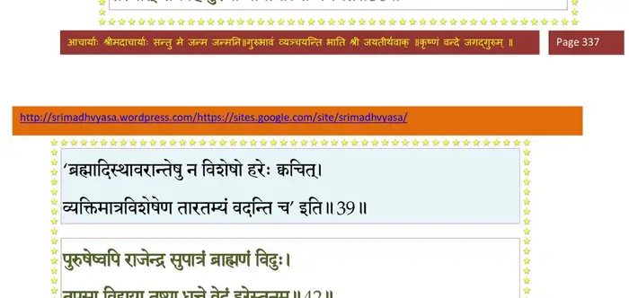
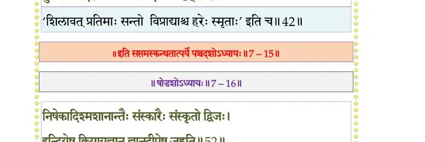
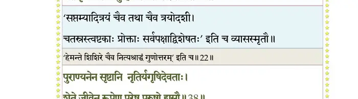

स्कन्ध 7 · अध्याय 15
श्लोक १
नारद उवाच–
कर्मनिष्ठा द्विजाः केचित् तपोनिष्ठा नृपापरे ।
स्वाध्यायेऽन्ये प्रवचने अन्ये च ज्ञानयोगयोः।। १ ।।
कर्मनिष्ठा द्विजाः केचित् तपोनिष्ठा नृपापरे ।
स्वाध्यायेऽन्ये प्रवचने अन्ये च ज्ञानयोगयोः।। १ ।।
श्लोक २
ज्ञाननिष्टाय देयानि कव्यान्यानन्त्यमिच्छता ।
दैवे च तदलावे स्यादितरेभ्यो यथाऽर्हतः।। २ ।।
दैवे च तदलावे स्यादितरेभ्यो यथाऽर्हतः।। २ ।।
श्लोक ३
द्वौ दैवे पितृकार्ये त्रीनेकैकमुभयत्र वा ।
भोजयेत् सुसमृद्धोऽपि श्राद्धे कुर्यान्न विस्तरम् ।। ३ ।।
भोजयेत् सुसमृद्धोऽपि श्राद्धे कुर्यान्न विस्तरम् ।। ३ ।।
श्लोक ४
देशकालोचितश्रद्धाद्रव्यपात्रार्हणानि च ।
सम्यग् भवन्ति नैतानि विस्तरात् स्वजनार्पणात्।। ४ ।।
सम्यग् भवन्ति नैतानि विस्तरात् स्वजनार्पणात्।। ४ ।।
श्लोक ५
देशे काले च सम्प्राप्तमुत्पन्नं हरिदैवतम् ।
श्रद्धया विधिवत् पात्रे न्यस्तं कामधुगक्षयम्।। ५ ।।
श्रद्धया विधिवत् पात्रे न्यस्तं कामधुगक्षयम्।। ५ ।।
भागवततात्पर्यनिर्णय

श्लोक ६
देवर्षिपितृभूतेभ्य आत्मने स्वजनाय च ।
अन्नं संविभजन् पश्येत् सर्वतः पुरुषात्मकम् ।। ६ ।।
अन्नं संविभजन् पश्येत् सर्वतः पुरुषात्मकम् ।। ६ ।।
श्लोक ७
न दद्यादामिषं श्राद्धे न चाद्याद् धर्मतत्त्ववित् ।
मुनीनां स्यात् परा प्रीतिर्यथा न पशुहिंसया ।। ७ ।।
मुनीनां स्यात् परा प्रीतिर्यथा न पशुहिंसया ।। ७ ।।
श्लोक ८
नैतादृशः परो धर्मो नृणां सद्धर्ममिच्छताम् ।
न्यासो दण्डस्य भूतेषु मनोवाक्कायजस्य यः।। ८ ।।
न्यासो दण्डस्य भूतेषु मनोवाक्कायजस्य यः।। ८ ।।
श्लोक ९
एके कर्ममयान् यज्ञान् ज्ञानिनो यज्ञवित्तमाः ।
आत्मसंयमनेऽनीहा जुह्वति ज्ञानदीपिते ।। ९ ।।
आत्मसंयमनेऽनीहा जुह्वति ज्ञानदीपिते ।। ९ ।।
श्लोक १०
द्रव्ययज्ञैर्यक्ष्यमाणं दृष्ट्वा भूतानि बिभ्यति ।
एष माकरुणो हन्यादतज्ज्ञो ह्यसुतृब् ध्रुवम्।। १० ।।
एष माकरुणो हन्यादतज्ज्ञो ह्यसुतृब् ध्रुवम्।। १० ।।
श्लोक ११
तस्माद् दैवोपपन्नेन मुन्यन्नेनैव धर्मवित् ।
सन्तुष्टोऽहरहः कुर्यान्नित्यनैमित्तिकाः क्रियाः ।। ११ ।।
सन्तुष्टोऽहरहः कुर्यान्नित्यनैमित्तिकाः क्रियाः ।। ११ ।।
भागवततात्पर्यनिर्णय
श्लोक १२
विधर्मः परधर्मश्च आभास उपमा छलः ।
अधर्मशाखाः पञ्चेमा धर्मज्ञोऽधर्मवत् त्यजेत्।। १२ ।।
अधर्मशाखाः पञ्चेमा धर्मज्ञोऽधर्मवत् त्यजेत्।। १२ ।।
श्लोक १३
धर्मबाधो विधर्मः स्यात् परधर्मोऽन्यचोदितः ।
उपधर्मस्तु पाखण्डो दम्भो वा धर्मभिच्छलः ।। १३ ।।
उपधर्मस्तु पाखण्डो दम्भो वा धर्मभिच्छलः ।। १३ ।।
श्लोक १४
यस्त्विच्छया कृतः पुम्भिराभासो ह्याश्रमः पृथक् ।
स्वभावविहितो धर्मः कल्प्यतेऽस्योपशान्तये।। १४ ।।
स्वभावविहितो धर्मः कल्प्यतेऽस्योपशान्तये।। १४ ।।
श्लोक १५
धर्मार्थमपि नेहेत यात्रार्थं वाऽधनो धनम् ।
अनीहाऽनीहमानस्य महाहेरिव वृत्तिदा ।। १५ ।।
अनीहाऽनीहमानस्य महाहेरिव वृत्तिदा ।। १५ ।।
श्लोक १६
सन्तुष्टस्य निरीहस्य स्वात्मारामस्य यत् सुखम् ।
कुतस्तत् कामलोभेन धावतोऽर्थेहया दिशः ।। १६ ।।
कुतस्तत् कामलोभेन धावतोऽर्थेहया दिशः ।। १६ ।।
श्लोक १७
सदा सन्तुष्टमनसः सर्वाः सुखमया दिशः ।
शर्कराकण्टकादिभ्यो यथोपानत्पदः शिवम् ।। १७ ।।
शर्कराकण्टकादिभ्यो यथोपानत्पदः शिवम् ।। १७ ।।
श्लोक १८
सन्तुष्टः केन वा राजन् न वर्तेतापि वारिणा ।
औपस्थ्यजैह्व्यकार्पण्याद् गृहपालायते जनः ।। १८ ।।
औपस्थ्यजैह्व्यकार्पण्याद् गृहपालायते जनः ।। १८ ।।
श्लोक १९
असन्तुष्टस्य विप्रस्य तेजो विद्या तपो यशः ।
स्रवतीन्द्रियलौल्येन ज्ञानं चैवावकीर्यते ।। १९ ।।
स्रवतीन्द्रियलौल्येन ज्ञानं चैवावकीर्यते ।। १९ ।।
श्लोक २०
कामस्यान्तं हि क्षुत्तृड्भ्यां क्रोधस्यैतत्फलोदयात् ।
जनो याति न लोभस्य जित्वा भुक्त्वा दिशो भुवः।। २० ।।
जनो याति न लोभस्य जित्वा भुक्त्वा दिशो भुवः।। २० ।।
श्लोक २१
पण्डिता बहवो राजन् बहुज्ञाः संशयच्छिदः ।
सदसस्पतयोऽप्येके असन्तोषात् पतन्त्यधः ।। २१ ।।
सदसस्पतयोऽप्येके असन्तोषात् पतन्त्यधः ।। २१ ।।
श्लोक २२
असङ्कल्पाज्जयेत् कामान् क्रोधं कामविवर्जनात् ।
अर्थानर्थेक्षया लोभं भयं तत्वावमर्शनात् ।। २२ ।।
अर्थानर्थेक्षया लोभं भयं तत्वावमर्शनात् ।। २२ ।।
श्लोक २३
आन्वीक्षक्या शोकमोहौ दम्भं महदुपाश्रयात् ।
योगान्तरायान् मौनेन हिंसां कायाद्यनीहया।। २३ ।।
योगान्तरायान् मौनेन हिंसां कायाद्यनीहया।। २३ ।।
श्लोक २४
कृपया भूतजं दुःखं दैवं जह्यात् समाधिना ।
आत्मजं योगवीर्येण निद्रां सत्वनिषेवया ।। २४ ।।
आत्मजं योगवीर्येण निद्रां सत्वनिषेवया ।। २४ ।।
श्लोक २५
रजस्तमश्च सत्वेन सत्वं चोपशमेन च ।
एतत् सर्वं गुरौ भक्त्या पुरुषो मनसा जयेत् ।। २५ ।।
एतत् सर्वं गुरौ भक्त्या पुरुषो मनसा जयेत् ।। २५ ।।
भागवततात्पर्यनिर्णय
श्लोक २६
यस्य साक्षाद् भगवति ज्ञानदीपप्रदे गुरौ ।
अभिसन्धिः श्रुतं तस्य सर्वं कुञ्जरशौचवत् ।। २६ ।।
अभिसन्धिः श्रुतं तस्य सर्वं कुञ्जरशौचवत् ।। २६ ।।
श्लोक २७
एष वै भगवान् साक्षात् प्रधानपुरुषेश्वरः ।
योगेश्वरैर्विमृग्याङ्घ्रिर्लोकोऽयं मन्यते नरम् ।। २७ ।।
योगेश्वरैर्विमृग्याङ्घ्रिर्लोकोऽयं मन्यते नरम् ।। २७ ।।
श्लोक २८
षड्वर्गसंयमैकान्ताः सर्वा निगमचोदनाः ।
तदन्ता यदि नो योगमावहेयुः श्रमावहाः ।। २८ ।।
तदन्ता यदि नो योगमावहेयुः श्रमावहाः ।। २८ ।।
श्लोक २९
यथा वार्तादयो विद्याः पुंसः स्वार्थं न बिभ्रति ।
अनर्थाय भवेयुश्च पूर्तमिष्टं तथाऽसतः ।। २९ ।।
अनर्थाय भवेयुश्च पूर्तमिष्टं तथाऽसतः ।। २९ ।।
श्लोक ३०
यश्चित्तविजयेच्छुः स्यान्निःसङ्गो निष्परिग्रहः ।
एको विविक्तशरणो भिक्षुर्भैक्ष्यमिताशनः ।। ३० ।।
एको विविक्तशरणो भिक्षुर्भैक्ष्यमिताशनः ।। ३० ।।
श्लोक ३१
शुचौ देशे समे राजन्नास्थाप्यासनमात्मनः ।
स्थिरं सुखं समं तस्मिन्नासीतर्ज्वङ्ग ओमिति।। ३१ ।।
स्थिरं सुखं समं तस्मिन्नासीतर्ज्वङ्ग ओमिति।। ३१ ।।
श्लोक ३२
प्राणापानौ सन्निरुन्ध्यात् पूरकुम्भकरेचकैः ।
यावन्मनस्त्यजेत् कामान् स्वनासाग्रनिरीक्षणः ।। ३२ ।।
यावन्मनस्त्यजेत् कामान् स्वनासाग्रनिरीक्षणः ।। ३२ ।।
श्लोक ३३
यतो यतो निःसरति मनः कामहतं भ्रमत् ।
ततस्तत उपाहृत्य हृदि रुन्ध्याच्छनैर्बुधः ।। ३३ ।।
ततस्तत उपाहृत्य हृदि रुन्ध्याच्छनैर्बुधः ।। ३३ ।।
श्लोक ३४
एवमभ्यसतश्चित्तं कालेनाल्पीयसा मुनेः ।
अविषण्णं च निर्वाणं यात्यनिन्धनवह्निवत् ।। ३४ ।।
अविषण्णं च निर्वाणं यात्यनिन्धनवह्निवत् ।। ३४ ।।
श्लोक ३५
कामादिभिरनाविद्धं प्रशान्ताखिलवृत्ति यत् ।
चित्तं ब्रह्मसुखस्पृष्टं नैवोत्तिष्ठेत कर्हिचित् ।। ३५ ।।
चित्तं ब्रह्मसुखस्पृष्टं नैवोत्तिष्ठेत कर्हिचित् ।। ३५ ।।
श्लोक ३६
यः प्रव्रज्य गृहात् पूर्वं त्रिवर्गावपनात् पुनः ।
यदा सेवेत तान् भिक्षुः स पापो निरपत्रपः ।। ३६ ।।
यदा सेवेत तान् भिक्षुः स पापो निरपत्रपः ।। ३६ ।।
श्लोक ३७
यैः स्वदेहः स्मृतोऽनात्मा मर्त्यो विट्कृमिभस्मवत् ।
तमेव स्वात्मसात् कृत्वा श्लाघयन्ति ह्यसत्तमाः ।। ३७ ।।
तमेव स्वात्मसात् कृत्वा श्लाघयन्ति ह्यसत्तमाः ।। ३७ ।।
भागवततात्पर्यनिर्णय
श्लोक ३८
गृहस्थस्य क्रियात्यागो व्रतत्यागो वटोरपि ।
तपस्विनो ग्रामसेवा भिक्षोरिन्द्रियलौल्यता ।। ३८ ।।
तपस्विनो ग्रामसेवा भिक्षोरिन्द्रियलौल्यता ।। ३८ ।।
श्लोक ३९
आश्रमापसदा ह्येते खल्वाश्रमविडम्बिनः ।
देवमायाविमूढांस्तानुपेक्षेतानुकम्पया ।। ३९ ।।
देवमायाविमूढांस्तानुपेक्षेतानुकम्पया ।। ३९ ।।
श्लोक ४०
आत्मानं चेद् विजानीयादेवं ज्ञानधृताशयः ।
किमिच्छन् कस्य वा हेतोर्देहं पुष्णाति लम्पटः ।। ४० ।।
किमिच्छन् कस्य वा हेतोर्देहं पुष्णाति लम्पटः ।। ४० ।।
श्लोक ४१
आहुः शरीरं रथमिन्द्रियाणि हयानभीषुं मन इन्द्रियेशम् ।
वर्त्मानि मात्रा धिषणां च सूतं सत्वं बृहद्बन्धुरमीशधाम ।। ४१ ।।
वर्त्मानि मात्रा धिषणां च सूतं सत्वं बृहद्बन्धुरमीशधाम ।। ४१ ।।
श्लोक ४२
अक्षं दशप्राणमधर्मधर्मौ चक्रेऽभिमानं रथिनं च जीवम् ।
धनुर्हि तस्य प्रणवं पठन्ति शरं तु जीवं परमेव लक्ष्यम् ।। ४२ ।।
धनुर्हि तस्य प्रणवं पठन्ति शरं तु जीवं परमेव लक्ष्यम् ।। ४२ ।।
श्लोक ४३
रागो द्वेषश्च लोभश्च शोकमोहौ भयं मदः ।
मानोऽभिमानोऽसूया च माया हिंसा च मत्सरः।। ४३ ।।
मानोऽभिमानोऽसूया च माया हिंसा च मत्सरः।। ४३ ।।
श्लोक ४४
रजः प्रमादः क्षुन्निद्रा शत्रवस्त्वेवमादयः ।
रजस्तमःप्रकृतयः सत्वप्रकृतयः क्वचित् ।। ४४ ।।
रजस्तमःप्रकृतयः सत्वप्रकृतयः क्वचित् ।। ४४ ।।
श्लोक ४५
यावन्नृकायरथमात्मवशोपकल्पं
धत्ते गरिष्ठचरणार्चनया निशातम् ।
ज्ञानासिमच्युतबलं दधदस्तशत्रुः
स्वाराज्यतुष्ट उपशान्त इदं विजह्यात् ।। ४५ ।।
धत्ते गरिष्ठचरणार्चनया निशातम् ।
ज्ञानासिमच्युतबलं दधदस्तशत्रुः
स्वाराज्यतुष्ट उपशान्त इदं विजह्यात् ।। ४५ ।।
श्लोक ४६
नो चेत् प्रमत्तमसदिन्द्रियवाजिसूता
नीत्वोत्पथं विषयदस्युषु निक्षिपन्ति ।
ते दस्यवः सहयसूतममुं तमोऽन्धे
संसारकूप उरुमृत्युभये क्षिपन्ति ।। ४६ ।।
नीत्वोत्पथं विषयदस्युषु निक्षिपन्ति ।
ते दस्यवः सहयसूतममुं तमोऽन्धे
संसारकूप उरुमृत्युभये क्षिपन्ति ।। ४६ ।।
श्लोक ४७
प्रवृत्तं च निवृत्तं च द्विविधं कर्म वैदिकम् ।
आवर्तते प्रवृत्तेन निवृत्तेनाश्नुतेऽमृतम्।। ४७ ।।
आवर्तते प्रवृत्तेन निवृत्तेनाश्नुतेऽमृतम्।। ४७ ।।
श्लोक ४८
हिंस्रं द्रव्यमयं काम्यमग्निहोत्राद्यशान्तिदम् ।
दर्शश्च पूर्णमासश्च चातुर्मास्यः पशुः पुनः ।। ४८ ।।
दर्शश्च पूर्णमासश्च चातुर्मास्यः पशुः पुनः ।। ४८ ।।
श्लोक ४९
एतदिष्टं प्रवृत्ताख्यं हुतं प्रहुतमेव च ।
पूर्तं सुरालयारामकूपाजीव्यादिलक्षणम् ।। ४९ ।।
पूर्तं सुरालयारामकूपाजीव्यादिलक्षणम् ।। ४९ ।।
श्लोक ५०
द्रव्यमूष्मविपाकश्च धूमो रात्रिरपक्षयः ।
अयनं दक्षिणं सोमो दर्श ओषधिवीरुधः ।। ५० ।।
अयनं दक्षिणं सोमो दर्श ओषधिवीरुधः ।। ५० ।।
श्लोक ५१
अन्नं रेत इति क्ष्मेश पितृयानं पुनर्भवः ।
एकैकश्येनानुपूर्व्याद् भूत्वा भूत्वेह जायते।। ५१ ।।
एकैकश्येनानुपूर्व्याद् भूत्वा भूत्वेह जायते।। ५१ ।।
श्लोक ५२
निषेकादिश्मशानान्तैः संस्कारैः संस्कृतो द्विजः ।
इन्द्रियेषु क्रियायज्ञान् ज्ञानदीपेषु जुह्वति।। ५२ ।।
इन्द्रियेषु क्रियायज्ञान् ज्ञानदीपेषु जुह्वति।। ५२ ।।
श्लोक ५३
इन्द्रियाणि मनस्येवं वाचि वैकारिकं मनः ।
तां तु वर्णसमाम्नाये तमोङ्कारे स्वरे न्यसेत्।। ५३ ।।
तां तु वर्णसमाम्नाये तमोङ्कारे स्वरे न्यसेत्।। ५३ ।।
श्लोक ५४
ओङ्कारं बिन्दुनादे तु तं तु प्राणे महत्यमुम् ।
अग्निः सूर्यो दिवा वायुः शुक्लो राकोत्तरः स्वराट् ।। ५४ ।।
अग्निः सूर्यो दिवा वायुः शुक्लो राकोत्तरः स्वराट् ।। ५४ ।।
श्लोक ५५
विश्वोऽथ तैजसः प्राज्ञस्तुर्य आत्मा समन्वयः ।
देवयानमिदं प्राहुर्भूत्वा भूत्वाऽनुपूर्वशः ।
आत्मयाज्युपशान्तात्मा ह्यात्मस्थो न निवर्तते।। ५५ ।।
देवयानमिदं प्राहुर्भूत्वा भूत्वाऽनुपूर्वशः ।
आत्मयाज्युपशान्तात्मा ह्यात्मस्थो न निवर्तते।। ५५ ।।
श्लोक ५६
य एते पितृदेवानामयने देवनिर्मिते ।
शास्त्रेण चक्षुषा वेद जनस्थोऽपि न मुह्यति।। ५६ ।।
शास्त्रेण चक्षुषा वेद जनस्थोऽपि न मुह्यति।। ५६ ।।
श्लोक ५७
आदावन्तेऽजनानाशं बहिरन्तः परावरम् ।
ज्ञानं ज्ञेयं वचो वाच्यं तमो ज्योतिश्च तत् स्वयम्।। ५७ ।।
ज्ञानं ज्ञेयं वचो वाच्यं तमो ज्योतिश्च तत् स्वयम्।। ५७ ।।
भागवततात्पर्यनिर्णय

श्लोक ५८
अबाधितोऽपि ह्याभासो यथा वस्तुतया स्मृतः ।
दुर्घटत्वादैन्द्रियकं तद्वदर्थविकल्पितम् ।। ५८ ।।
दुर्घटत्वादैन्द्रियकं तद्वदर्थविकल्पितम् ।। ५८ ।।
श्लोक ५९
क्षित्यादीनां पदार्थानां छाया न कतमाऽपि हि ।
न सङ्घातो विकारोऽपि न पृथङ् नान्वितोऽपि वा।। ५९ ।।
न सङ्घातो विकारोऽपि न पृथङ् नान्वितोऽपि वा।। ५९ ।।
श्लोक ६०
धातवोऽवयवित्वाच्च तन्मात्रावयवैर्विना ।
न स्युर्ह्यसत्यवयविन्यासन्नावयवा इव।। ६० ।।
न स्युर्ह्यसत्यवयविन्यासन्नावयवा इव।। ६० ।।
श्लोक ६१
स्यात् सादृश्यभ्रमस्तावद् विकल्पे सति वस्तुनः ।
जाग्रत्स्वप्नौ यथा स्वप्ने तथा विधिनिषेधता।। ६१ ।।
जाग्रत्स्वप्नौ यथा स्वप्ने तथा विधिनिषेधता।। ६१ ।।
भागवततात्पर्यनिर्णय

श्लोक ६२
भावाद्वैतं क्रियाद्वैतं द्रव्याद्वैतं तथैव च ।
वर्तयन् स्वानुभूत्येह त्रीन् स्वप्नान् धुनुते मुनिः।। ६२ ।।
वर्तयन् स्वानुभूत्येह त्रीन् स्वप्नान् धुनुते मुनिः।। ६२ ।।
श्लोक ६३
कार्यकारणवस्त्वैक्यदर्शनं पटतन्तुवत् ।
अवस्तुत्वाद् विकल्पस्य भावाद्वैतं तदुच्यते ।। ६३ ।।
अवस्तुत्वाद् विकल्पस्य भावाद्वैतं तदुच्यते ।। ६३ ।।
श्लोक ६४
यद् ब्रह्मणि परे साक्षात् सर्वकर्मसमर्पणम् ।
मनोवाक्तनुभिः पार्थ क्रियाद्वैतं तदुच्यते।। ६४ ।।
मनोवाक्तनुभिः पार्थ क्रियाद्वैतं तदुच्यते।। ६४ ।।
श्लोक ६५
आत्मजायासुतादीनामन्येषां सर्वदेहिनाम् ।
यत् स्वार्थकामयोरैक्यं द्रव्याद्वैतं तदुच्यते।। ६५ ।।
यत् स्वार्थकामयोरैक्यं द्रव्याद्वैतं तदुच्यते।। ६५ ।।
श्लोक ६६
यद् यस्य वाऽनिषिद्धं स्याद् येन यत्र यतो नृप ।
स तेनेहेत कर्माणि नरो नान्यैरनापदि।। ६६ ।।
स तेनेहेत कर्माणि नरो नान्यैरनापदि।। ६६ ।।
श्लोक ६७
एतैरन्यैश्च वेदोक्तैर्वर्तमानः स्वकर्मभिः ।
गृहेऽप्यस्य गतिं यायाद्राजंस्तद्भक्तिभाङ् नरः।। ६७ ।।
गृहेऽप्यस्य गतिं यायाद्राजंस्तद्भक्तिभाङ् नरः।। ६७ ।।
श्लोक ६८
यथा हि यूयं नृपदेवदुस्त्यजादापद्गणादुत्तरिता ननु प्रभो ।
यत्पादपङ्केरुहसेवया भवानहार्षीन्निर्जितदिग्गजः क्रतुः ।। ६८ ।।
यत्पादपङ्केरुहसेवया भवानहार्षीन्निर्जितदिग्गजः क्रतुः ।। ६८ ।।
श्लोक ६९
अहं पुराऽभवं कश्चिद् गन्धर्व उपबर्हणः ।
नाम्नाऽतीते महाकल्पे गन्धर्वाणां सुसम्मतः।। ६९ ।।
नाम्नाऽतीते महाकल्पे गन्धर्वाणां सुसम्मतः।। ६९ ।।
श्लोक ७०
रूपपेशलमाधुर्यसौगन्ध्यप्रियदर्शनः ।
स्त्रीणां प्रियतमो नित्यं मतस्तत्पुरलम्पटः।। ७० ।।
स्त्रीणां प्रियतमो नित्यं मतस्तत्पुरलम्पटः।। ७० ।।
श्लोक ७१
एकदा देवसत्रे तु गन्धर्वाप्सरसां गणाः ।
उपहूता विश्वसृग्भिर्हरिगाथोपगायने ।। ७१ ।।
उपहूता विश्वसृग्भिर्हरिगाथोपगायने ।। ७१ ।।
श्लोक ७२
अगायं तद् विदित्वाऽहं स्त्रीभिः परिवृतो गतः ।
ज्ञात्वा विश्वसृजस्तन्मे हेलनं शेपुरोजसा ।। ७२ ।।
ज्ञात्वा विश्वसृजस्तन्मे हेलनं शेपुरोजसा ।। ७२ ।।
श्लोक ७३
याहि त्वं शूद्रतामाशु नष्टश्रीः कृतहेलनः ।
तावद् दास्यामहं जज्ञे तत्रापि ब्रह्मवादिनाम्
शुश्रूषयाऽनुसङ्गेन प्राप्तोऽहं ब्रह्मपुत्रताम् ।। ७३ ।।
तावद् दास्यामहं जज्ञे तत्रापि ब्रह्मवादिनाम्
शुश्रूषयाऽनुसङ्गेन प्राप्तोऽहं ब्रह्मपुत्रताम् ।। ७३ ।।
श्लोक ७४
धर्मस्ते गृहमेधीयो वर्णितः पापनाशनः ।
गृहस्थो येन पदवीमञ्जसा न्यासिनामियात्।। ७४ ।।
गृहस्थो येन पदवीमञ्जसा न्यासिनामियात्।। ७४ ।।
श्लोक ७५
यूयं नृलोके बत भूरिभागा लोकं पुनाना मुनयोऽभियान्ति ।
येषां गृहानावसतीति साक्षाद् गूढं परं ब्रह्म मनुष्यलिङ्गम्।। ७५ ।।
येषां गृहानावसतीति साक्षाद् गूढं परं ब्रह्म मनुष्यलिङ्गम्।। ७५ ।।
श्लोक ७६
स वा अयं ब्रह्म महद् विमृग्यंकैवल्यनिर्वाणसुखानुभूतिः ।
प्रियः सुहृद् वः खलु मातुलेयआत्माऽर्हणीयो विधिकृद्गुरुश्च।। ७६ ।।
प्रियः सुहृद् वः खलु मातुलेयआत्माऽर्हणीयो विधिकृद्गुरुश्च।। ७६ ।।
श्लोक ७७
न यस्य साक्षाद् भवपद्मजादिभी रूपं धिया वस्तुतयोपवर्णितम् ।
मौनेन भक्त्योपशमेन पूजितः प्रसीदतामेष स सात्वतां पतिः ।। ७७ ।।
मौनेन भक्त्योपशमेन पूजितः प्रसीदतामेष स सात्वतां पतिः ।। ७७ ।।
श्लोक ७८
श्रीशुक उवाच–
इति देवर्षिणा प्रोक्तं निशम्य भरतर्षभः ।
पूजयासास सुप्रीतः कृष्णं च प्रेमविह्वलः ।। ७८ ।।
इति देवर्षिणा प्रोक्तं निशम्य भरतर्षभः ।
पूजयासास सुप्रीतः कृष्णं च प्रेमविह्वलः ।। ७८ ।।
श्लोक ७९
कृष्णपार्थावुपामन्त्र्य पूजितः प्रययौ मुनिः ।
श्रुत्वा कृष्णं परं ब्रह्म पार्थाः परमविस्मिताः ।। ७९ ।।
श्रुत्वा कृष्णं परं ब्रह्म पार्थाः परमविस्मिताः ।। ७९ ।।
श्लोक ८०
इति दाक्षायणीनां ते पृथग्वंशाः प्रकीर्तिताः ।
देवासुरमनुष्याद्या लोका यत्र चराचराः ।। ८० ।।
देवासुरमनुष्याद्या लोका यत्र चराचराः ।। ८० ।।
।। इति श्रीमद्भागवते सप्तमस्कन्धे पञ्चदशोऽध्यायः ।।